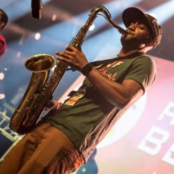
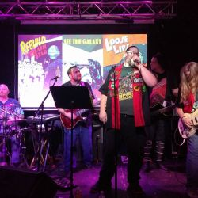
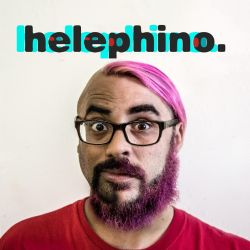

Judges
Beaker Sullivan

Who?
Beaker Sullivan was born in Newport, Rhode Island to the heir of the Sullivan's Own Perfumed Whale Oil fortune; when Beaker was but a lad they invested in Betamax technology and lost all of their riches, prompting the young Beaker to take to the streets of New York City selling his crack-cocaine, PCP and counterfeit handbags in between DJ gigs. Beaker is currently part of the electronic rock experience known as Crayondroids, which can be heard destroying all humans at events across the country.
Creative Mindframe

Who?
Creative Mind Frame (AKA 1-UP) is a rapping, saxing, Power Ranger loving Nerdcore musician out of Dallas TX. He spends his days working as a Business Process Engineer, and his nights working on catchy, nostalgic ear tunes in an attempt to spread beaucoup smiles to the world! (Sometimes referred to as the Fresh Prince Of Nerdcore - You'll understand why eventually) On the weekends? The Con addiction occurs. From rapping about DBZ to Flame Of Recca at Otakon... to playing sax and keys to Sonic The Hedgehog classics at Denver Comic Con or even rapping about corny pick up lines at PAX and MAGFest, 1-UP focuses his energy and attention on making sure the crowd is having a great time and is getting to be part of the interaction. While he loves to give out high fives, we will be seeing Mr. 1-UP deliver more Ls than handslaps this VPC.
Dr Vern

Who?
Dr. Vern (Vernon Loyed) is a powerhouse in nerd music, acting as the iconic frontman for award-winning Orlando metal band Sci-Fried. The Doctor is known for his vocal range and the theatricality of his performances, in addition to his service to the music community curating music and events on nerdy.fm and his involvement with the Orlando scene. With Sci-Fried, he's played all over the countries at cons and concerts, but Dr. Vern's musical career stretches back into a mystical time before compact disc technology and the internet.
Navi

Who?
Navi (Navid Azeez) is a DC-based manipulator of rhymes and sounds, providing the production base for his and Adam Selene's victory in VPC4 as the earth-shattering experimental duo Helephino. Fresh off of his run of science fiction puppet rap odyssey Dot: A Rotoplastic Ballet, Navi is renowned for tearing up stages by himself or with other members of the crew of musicians he has gathered around himself to form the psychedelic rap jam group Picnibus.
Adam Selene
Who?
Rap artist, design professional and bearded mic alchemist Adam Selene has roots in both Baltimore, Maryland and Denver, Colorado and has shared the stage with numerous individuals, nerdcore, art rap and otherwise. Adam has an explosive live show and an incisive, perceptive outlook that they fuse with dense lyricism to create a product that is all hip hop and all cool. You should probably buy something made by them.